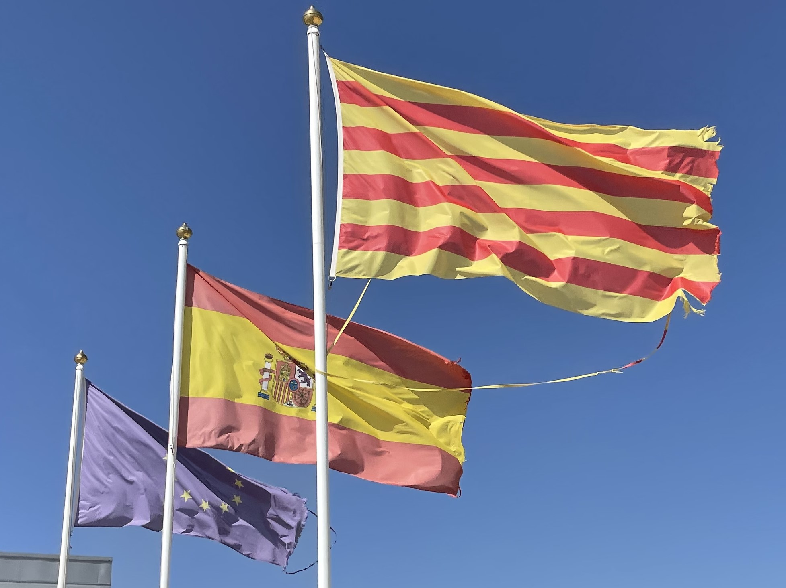
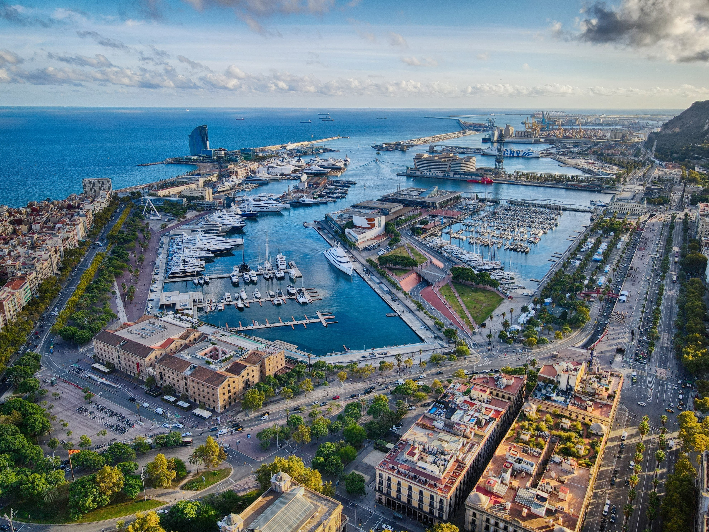
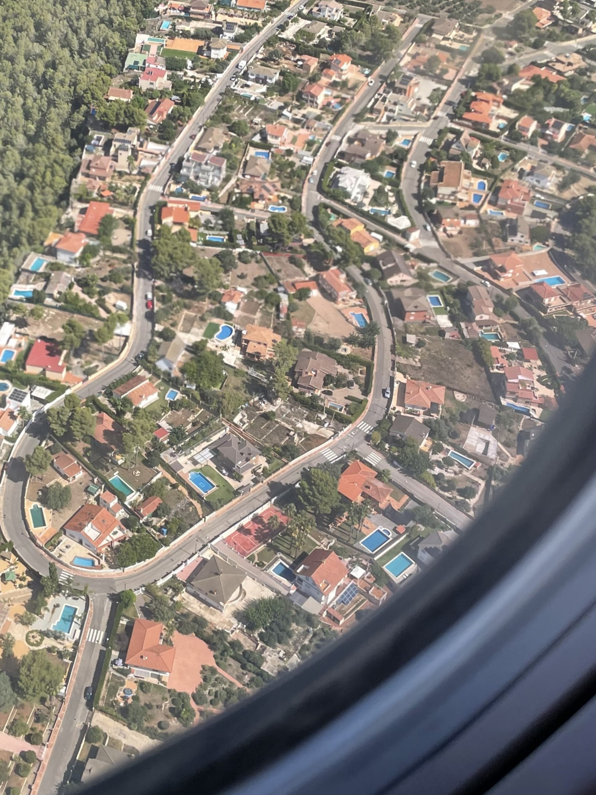
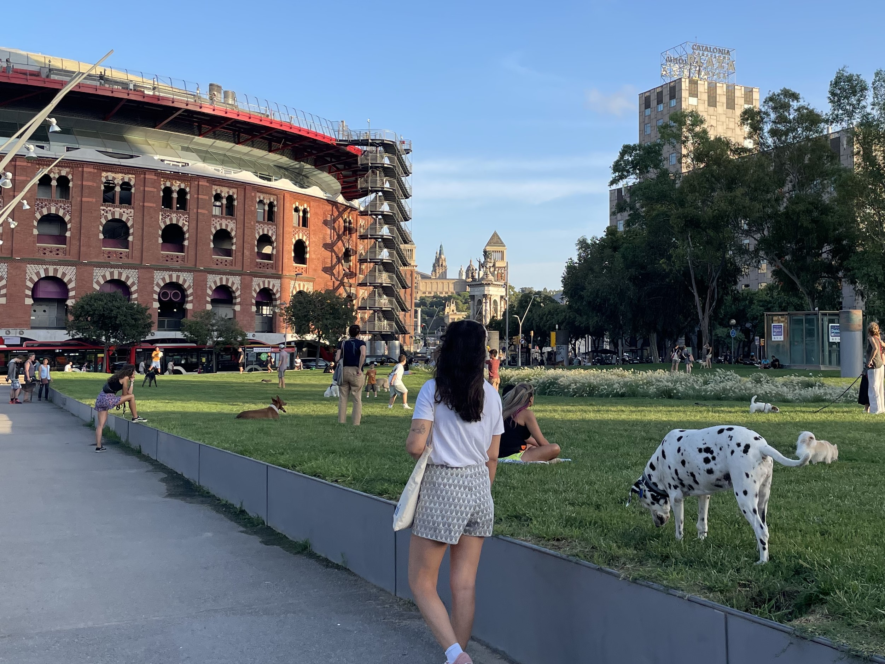
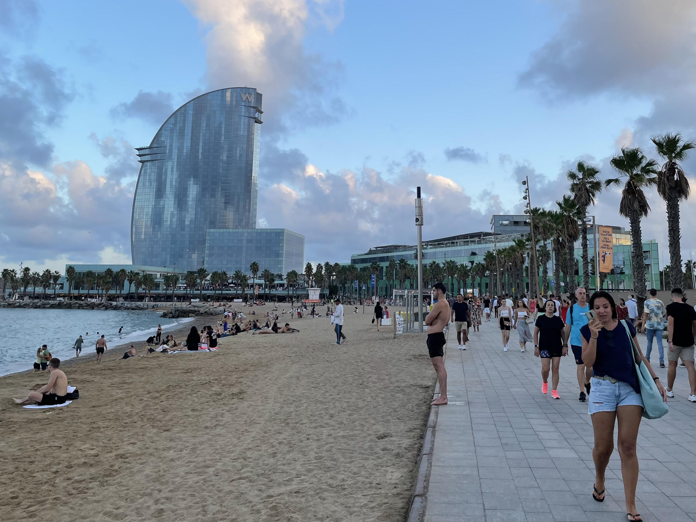
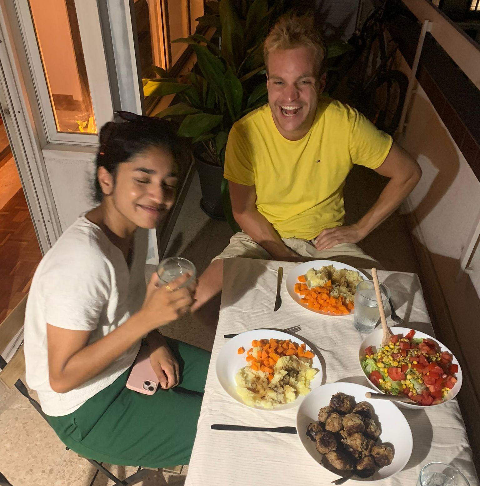

03 Arrival in
Barcelona
About the bustle of the city,
missing daily items,
and familiar visit

After reading the first two blogs with a few hints such as the warm south, you will undoubtedly want to hear which destination I chose for the expat experience. I won't keep you in suspense any longer, the city is: Barcelona! The question that many people asked because they were already aware was 'But why Barcelona?' and when I said about the weather and the relaxed culture, among other things, people often responded with understanding. It is the city where my dear father once wanted to show us a bullring, after which he placed two index fingers on his head and asked a police officer 'Torro torro?'.
It was three crazy first days for me, about which I type a report from the terrace of coffee shop Gallicia around the corner. Where many travellers experience a culture shock, I was initially more overwhelmed by the crowds of the 7 million people in this gigantic city. In the Netherlands in Wageningen you could walk to the floodplains in 5 minutes, while here, even in my relatively quiet neighbourhood Sants, the streets are full of cars, ambulances, barking dogs and noisy terrace goers until late at night. Every street so busy and the honking clearly audible from my bedroom. In order to manage the enormous crowds in the right direction, they have opted for one-way streets. As soon as the traffic light turns green, it also stays green for a good while and whole hordes of people move through the Catalan capital in this way. From home it seemed great to go to Barcelona, but on arrival it took a lot of getting used to because it doesn't feel like your own city at all. Simple practical obstacles were part of this. A little exercise is often good for people, but how do you go for a run if you encounter a traffic light every minute that remains on red for an eternity? Well, for example, by crossing the street diagonally halfway, I saw a Spaniard do the same and follow a good example. Where we in the Netherlands are used to keeping to the right, here they walk completely randomly on the street and just when you almost bump into them, a surprised look appears and they turn around a bit.
 Our apartment is located in the Sants district. From here it is best to run towards Montjuïc, which may not mean anything to you, but this is a gigantic castle on a mountain where the Olympic Games were held in 1992. Looking for an apartment in Barcelona is a terrible chore due to the increasing number of expats coming to live in Barcelona. It took a while, but luckily I had bingo two weeks before departure with a furnished room on the seventh floor in a renovated four-person apartment in the bustling family neighbourhood of Sants. Well renovated, on arrival the house was full of construction workers because all kinds of rooms were not yet finished, but I did receive a very warm welcome from landlord Diana, a 30-year-old woman from Barcelona who immediately gave some first tips about organic and culinary supermarkets. Although well-intentioned, my gut feeling indicated that I should first visit the trusted and cheap Lidl. Despite the loud Spanish music, it was a pleasure to buy trusted products such as that big orange bag of fruit muesli, knowing that you can at least go ahead with those things in the coming period.
Our apartment is located in the Sants district. From here it is best to run towards Montjuïc, which may not mean anything to you, but this is a gigantic castle on a mountain where the Olympic Games were held in 1992. Looking for an apartment in Barcelona is a terrible chore due to the increasing number of expats coming to live in Barcelona. It took a while, but luckily I had bingo two weeks before departure with a furnished room on the seventh floor in a renovated four-person apartment in the bustling family neighbourhood of Sants. Well renovated, on arrival the house was full of construction workers because all kinds of rooms were not yet finished, but I did receive a very warm welcome from landlord Diana, a 30-year-old woman from Barcelona who immediately gave some first tips about organic and culinary supermarkets. Although well-intentioned, my gut feeling indicated that I should first visit the trusted and cheap Lidl. Despite the loud Spanish music, it was a pleasure to buy trusted products such as that big orange bag of fruit muesli, knowing that you can at least go ahead with those things in the coming period.
In the run-up to departure I had to sacrifice a large part of my luggage because, as a programmer in the making, I insisted on taking the computer screen I am so attached to in my suitcase. Because I will have to pay attention to the little ones, purchasing fresh food containers was a smart move that allows me to make a lot of food and store it in multiple portions. I felt super happy and satisfied when I had this in my hands at Ikea, where I also bought a topper for the rock-hard mattress, a plant for decoration and a duvet. Pictures of family and friends hang on the wall. All these additions make the room feel a little more familiar.
Crazy days, I said it before, when sometimes I couldn't believe my luck and the next moment I could feel myself a lot of misery. The trip to Barcelona went well. After saying goodbye to my dear mother at Eindhoven Airport, the Ryanair plane took me over the Pyrenees to Reus Airport, two hours from Barcelona. While I was figuring out how to get to Barcelona in the blazing sun upon arrival in Reus, I bumped into retired artists Jan and Tom who also had Barcelona as their final destination. They told me about their retirement that had just started and the holiday home by the sea that they would like to visit more often now that there was more time. They treated me to coffee and we travelled to Barcelona by bus. Both were very curious about my plans and listened with eyes full of enthusiasm and with a hint of longing to the years behind them. They showed that they thought it was very cool that I was going to take this step in my life. The bus driver argued with the passengers for minutes about where to drop them off, where that conversation in the Netherlands would probably have ended in a few sentences. Upon arrival at my room, the enormous euphoria of the journey subsided and I was left alone in my bare new room. “What am I even doing here?” I thought. Night fell and the Barcelonans gathered with masses in the parks, not at all critical of where they took place, such as on the edge, next to a busy road on a stone wall. A group of women chatting, two frisbee young teenagers with tattoos and piercings, a mother who breastfeeds her baby publicly or a very scantily clad lady. Everything just seems a little rougher here. After sunset, the most shadowy figures appeared with cans of beer and Bluetooth speakers, some of which would spend the night on the street.
I visited Barcelona three times before where I met a number of people who still claim to live here today. Still, it felt like a huge barrier to ask them if they felt like doing something together because you kind of break into someone's life anyway. So when I felt really bad for a while, suddenly an app came in from my brother Jelte who had a friends weekend and you guessed the final destination: Barcelona! I had barely unpacked my bags when I joined the guys who took me in tow with a bunch of shots until the bartender thought we had enough. Then we visited the Barcelona club 'Razz Matazz' which made the evening complete. A wonderfully spontaneous and familiar evening, but that feeling was short-lived because afterwards I also felt a bit lonely again, which of course the hangover didn't help. Although it will still take some getting used to, I already had the feeling that it can be a lot of fun here. I have thrown out some lines for Spanish and salsa lessons, which I also did in the Netherlands and I expect that a little structure in the week will do me good.
Two guys I met in Barcelona in the summer of 2020 while doing a Spanish language course are 34 year old English marine officer Greg from Newcastle and the 33 year old English musician Daniel from Derbyshire. When I had gathered the courage to text them, I actually immediately received an invitation to a party that would take place in the W hotel unknown to me. Greg loves luxury events, often in the most impossible places. This made me curious about what he had invited me to. The W hotel turned out to be the eye-catcher of Barcelona, a 5 star hotel where overnight stays start from €400. You won't believe it, the party was free. “How can a party like this be 0 euros?” I asked Greg, to which he replied, “Because you are spending 9 euros on a beer mate.” There was dancing around the pool until 11pm, after which the party moved to the 26th floor of the building to continue the party here, surrounded by the Barcelona skyline. Everything made of marble, beautifully lit and furniture in the craziest shapes. Toilet windows from top to bottom overlooking the sea. An unprecedented experience. Funnily enough, seeing Greg and Daniel again felt like I was reuniting with two good friends, whereas two years ago I only spent two weeks with them. In any case, the first contacts had been made. The first roommate, 24 year old Pouya from Sri Lanka had also arrived, a super sweet girl with a huge amount of energy. She wasn’t sky because she immediately blurted out the question 'Don't you have social pressure from your mom because you are 30 and still not married?'. So anything but boring!
Time to wrap up. Tomorrow is Monday and my first working week will start, which will take some getting used to again. Where will I be working and will I have WiFi there? Can I have lunch here? Am I going to do something fun in the evenings? For example, I don't have a bicycle yet and I refuse to always buy € 2.50 for a separate metro ticket, so that I now always have to walk a lot in the heat. Anyway, it can even be quite satisfying to come up with solutions yourself and to feel more at home as a result. Good luck to everyone with the start of the new school year. This blog can come online a while later as I still have to make the website. Fortunately I get help from my handy brother Nick, for which thanks again through this road!